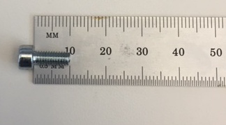

Operating Documentation
Direction 5193574-800, Rev# 22
Module Version 4.0, Version Date 2/16/15
Operating Documentation |
| Condition | Reference | Effectivity |
|---|---|---|
Collimator Control Board (CCB) Chassis disconnected | - | - |
Disconnect the CCB Chassis assembly. See Collimator Control Board Replacement procedure
Remove the (4) filter assembly mounting screws and remove the assembly. Retain these screws for re-installation of the filter assembly.
Insert the filter assembly into the frame
Secure new filter assembly to frame using only (4) M4-0.7, X10mm Long Socket Cap screws (GE P/N 1000-M4C010-04) with lock and flat washers. Torque the mounting screws to 3 N-m (26.6 lb-in, 2.2 lb-ft) (Ref GE drawing 5222000ADW). If there is a question whether the screw is the proper length, measure the shaft of the screw only, not the head. The proper way to measure the length of a bolt is depicted below:
Illustration 3: Proper way to measure screw length. (10mm screw shown)

Reattach the Collimator Control Board (CCB) Chassis assembly. See CCB Replacement